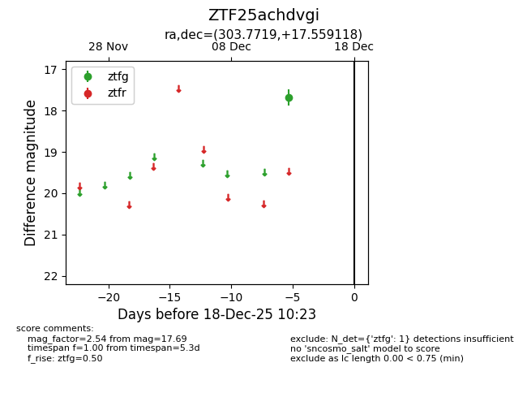
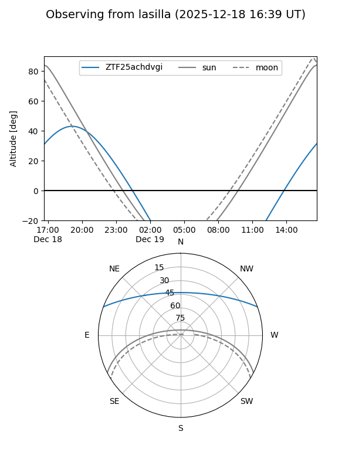
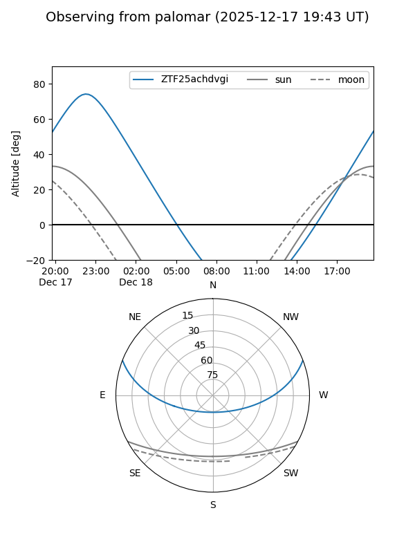

ZTF25achdvgi
Target ZTF25achdvgi at 2026-01-09 12:49
Aliases and brokers:
FINK: link
Lasair: link
ALeRCE: link
alt names
ZTF25achdvgi (ztf,fink_ztf)
Coordinates:
equatorial (ra, dec) = 303.7719,+17.55912
equatorial (HMS+DMS) = 20:15:05.25,+17:33:32.82
galactic (l, b) = (58.3732,-9.51497)
Flags:
Photometry:
last ztfg=17.69
1 ztfg detections
Lightcurve

Visibility


Additional plots